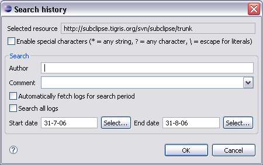

The history can be searched from the SVN Resource History View using the button or by pressing Ctrl+F when the History View is selected.
Browsing the history of a resource gives a good overview of changes made to it. Using the search functionality of the SVN Resource History View specific logs can be filtered. The search is performed on the fetched entries in the history view. It is possible to have the search fetch additional logs matching the period in which to search.

In the search dialog the selected resource is displayed. This resource is the same as the one for which logs are displayed in the history view. By enabling special characters it is possible to search with very basic pattern matching. The special characters can be used in the author field and the comment field.
The comment combo box keeps a list of previous searched comments in this Eclipse session. Searching all logs results in searching all fetched logs. When the option is enabled for automatically fetching additional logs the search all option results in fetching all logs for the selected resource. This operation might take some time.
When the option for searching all logs is disabled a start and end date can be given to select a search period. When the option for automatically fetching logs is selected the search process fetches logs up to the start date given. It fetches logs just like the Next action of the history view.
Click OK to search the logs with the given criteria.
A combination of searching all logs and automatically fetching additional logs results in fetching all logs of the selected resource. This operation might take some time.
Related Tasks
Related Reference